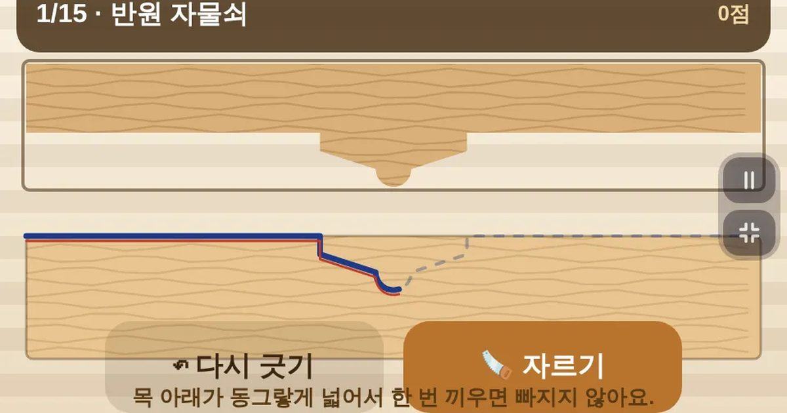

목수의 먹줄
Carpenter's Line
손재주 · 선 긋기 · 어르신도바로 시작설치 없음폰 · PC
▶ 지금 바로 하기로그인 없이 브라우저에서 바로 시작돼요
어떤 게임인가요?
윗나무 모양을 보고, 아랫나무에 자를 선을 손가락으로 그어요. 「자르기」를 누르면 톱질해서 끼워 보고, 틈이 벌어진 곳은 빨갛게. 반턱 · 주먹장 · 반원 자물쇠 · 열장 · 톱니 · 쐐기… 열두 가지 이음에, 중간중간 「어느 선이 맞나요?」 고르기. 손으로 하는 목공의 기본을 재미로 배워요.
목표 · 윗조각 모양을 보고 아랫나무에 자를 선을 정확히 그어, 열두 가지 이음을 틈 없이 맞추기.
게임 방법
- 위 조각의 아래 모양 그대로, 아랫판 왼쪽 끝에서 오른쪽 끝까지 한 번에 그어요
- 「자르기」를 누르면 톱질 → 윗조각이 내려와 끼워져요 · 틈은 빨갛게
- 처음 세 판은 흐린 먹줄이 보여요 · 그다음부터는 눈으로 보고 긋기
- 고르기 판: 세 선 중 맞는 선을 누르세요 · 왜 맞는지 설명이 나와요
- 잘못 그었으면 「다시 긋기」
등장하는 것들
- 먹줄(파랑) · 내가 그은 선
- 붉은 선 · 먹줄의 보조선
- 빨간 점 · 틈이 벌어진 자리
공략 팁
- 왼쪽 끝에서 오른쪽 끝까지 한 번에 — 중간에 끊기면 정확도가 떨어져요
- 꺾이는 자리에서 잠깐 멈췄다 꺾으면 모서리가 또렷해요
- 아래가 넓은 홈(주먹장 · 반원 자물쇠)은 당겨도 안 빠지는 이음이에요
- 고르기 판은 틀려도 설명을 읽어 두면 다음 선 긋기가 쉬워져요
 무당벌레 미로
무당벌레 미로 무당벌레 꽃밭
무당벌레 꽃밭 씽씽 카트
씽씽 카트 과일 합치기
과일 합치기 2048
2048 색실 잇기
색실 잇기